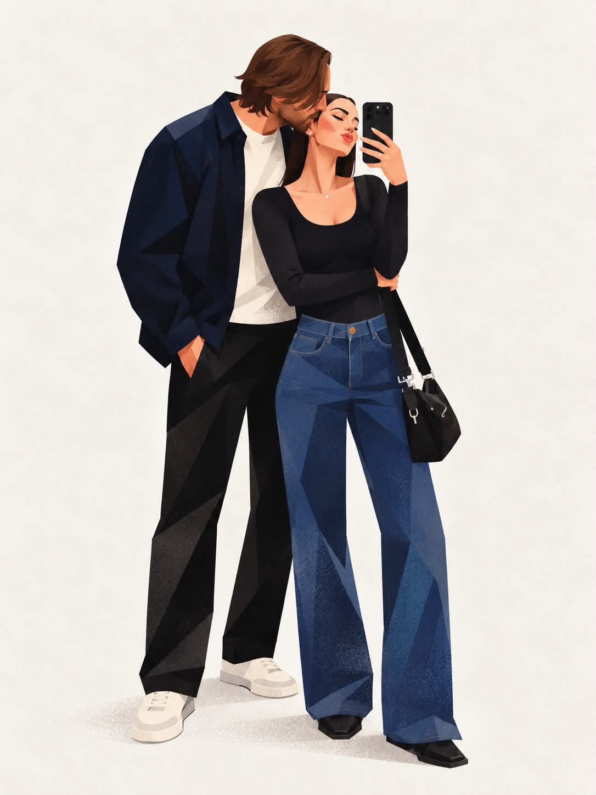
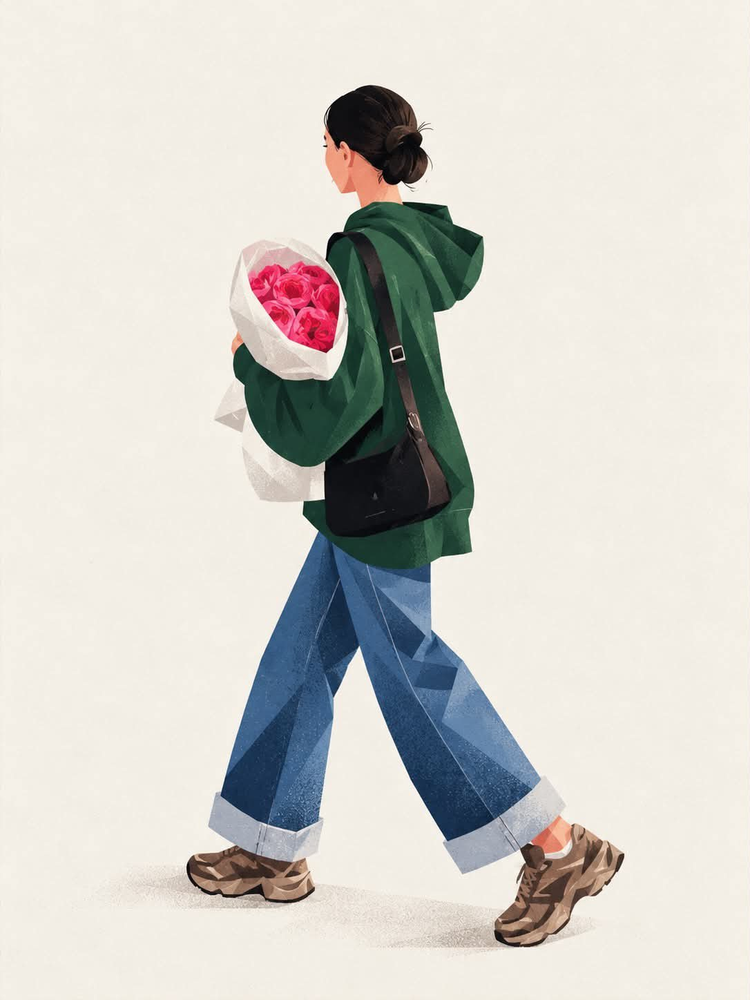

Street Editorial
A full-body fashion illustration of a young woman in a green hoodie and wide jeans carrying flowers and coffee, in textured geometric style.
| Creator | K @ChillaiKalan__ |
|---|---|
| Platform | X |
| Model | Nano Banana 2.1 |
| Likes | 494 |
| Posted | 2026-10-11 |
| Visual style | Watercolor storybook |
| Regional vibe | No specific region |
| Genre | Fashion / beauty |
| Mood | Lighthearted |
Prompt · from the post
Create a stylish, full-body editorial fashion illustration of a young woman in a modern casual outfit, using a minimalist, textured geometric art style. She wears an oversized forest-green hoodie, wide-leg blue denim jeans with folded cuffs, and chunky brown sneakers. Her dark hair is tied in a neat low bun. She carries a bouquet of vibrant pink roses wrapped in white paper, a takeaway coffee cup, and a black shoulder bag. Show her walking naturally in a relaxed pose, viewed from a three-quarter rear angle, with soft, elegant body proportions and simplified facial details. Use a warm ivory background with plenty of negative space, soft ground shadows, subtle paper grain, visible brush textures, and angular polygonal shading across the clothing and shoes. The color palette features deep forest green, denim blue, warm brown, cream, and vivid pink. Soft diffused lighting, clean composition, contemporary lifestyle magazine aesthetic, hand-painted digital illustration, refined edges, artistic fabric textures, vertical 3:4 composition, high detail. No photorealism, no 3D rendering, no extra objects, no text or watermark.